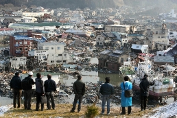
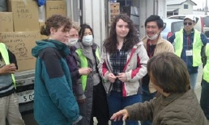
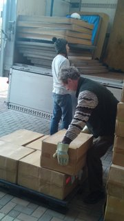

YWAM Japan Disaster Relief


Message from YWAM Japan Chairman
For all those affected by the earthquake in the Tohoku region, we want to express our heartfelt compassion, concern, and sympathy. To all those who are working hard in the disaster-hit areas and to all those around the world who are praying for Japan and giving financial and other assistance, we want to express our deep gratitude and respect for all your sacrifices.
Japan is now in a situation we never could have imagined. Reports of loss of life and damage increase daily. Many people in Japan are in deep shock.
Yet, even in the midst of such sadness, we have hope because our omnipotent God is with us. Many people around the world are praying for Japan. We are receiving many messages of encouragement. Many have expressed their desires to help. We are most thankful. Please know that your prayers are reaching Japan.
YWAM Japan has set up a small team to help coordinate incoming volunteer teams. Even though it is a small team, we hope we can be helpful. (relief@ywamtokyo.org)
Finally, I can report that all YWAM Japan members are safe.
In March, 2011
Kazuhiko Yoshida, Chairman
Youth With A Mission Japan